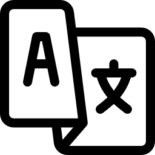

ENG
ENGFormação Acadêmica
-
• Sistemas para Internet
Instituto Federal Camboriú 01/2025 - Atualmente -
• Formação Pedagógica R2 - Química
Universidade Cruzeiro do Sul, São Paulo 06/2024 - 06/2025 -
• Química Industrial
Faculdades Oswaldo Cruz, São Paulo 01/2014 - 12/2017 -
• Ensino Médio
ETEC André Bogasian, Osasco 01/2011 - 12/2013
Experiência Laboral
-
• Professor de Inglês – Wizard/CNA
- Planejamento, desenvolvimento e ministramento de aulas, utilizando a metodologia da escola.
- Organização de registros de observação dos alunos e participação em atividades extracurriculares.
- Experiência em correção de provas/atividades e lançamento de notas.
- Participação em reuniões pedagógicas, discutindo e analisando as necessidades educacionais dos alunos. 01/2014 - Atualmente
-
• Estagiário de Suporte Técnico – FCA TI
- Atendimento e suporte técnico aos usuários.
- Suporte remoto utilizando AnyDesk para diagnóstico e resolução de problemas.
- Configuração e manutenção de redes e dispositivos.
- Configuração, instalação e suporte a periféricos e equipamentos de informática.
- Auxílio na identificação e resolução de problemas relacionados a hardware e software. 08/2025 - Atualmente
-
• Analista de Controle de Qualidade – LQB Laboratório Químico Brasileiro, Jandira
- Realização de análises físico-químicas e validações de processos.
- Análise de água, matéria-prima e material de embalagem.
- Controle de documentos como certificados de análise e relatórios periódicos.
- Suporte à gestão da qualidade com foco em melhorias e conformidade. 02/2023 - 05/2023
-
• Analista Químico – Hypermarcas/Coty, Barueri
- Execução de testes físico-químicos como pH, viscosidade, condutividade, entre outros.
- Preparo, padronização e descarte de soluções; testes microbiológicos.
- Testes de estabilidade em cosméticos, compras e suporte à P&D. 02/2016 - 08/2016
-
• Guest Services Officer – Royal Caribbean
- Atendimento no setor de Guest Services/Front Desk em navios de cruzeiro.
- Recepção de passageiros, resolução de problemas e venda de produtos.
- Manipulação de dinheiro e câmbio, supervisão de protocolos de qualidade. 12/2021 - 09/2022
-
• International Host – MSC Cruises
- Entretenimento e suporte a hóspedes nativos em inglês.
- Apresentação de palestras e workshops sobre vivência a bordo e excursões. 06/2019 - 12/2019
Habilidades
- • Facilidade com cálculos e uso de sistemas computacionais
- • Técnicas de preparo e manipulação de amostras laboratoriais
- • Comunicação clara e eficaz com diferentes públicos
- • Colaboração produtiva em equipe e bom relacionamento profissional

Idiomas
- • Inglês – Fluente (C1+ Cambridge Certificate)
- • Francês – Intermediário